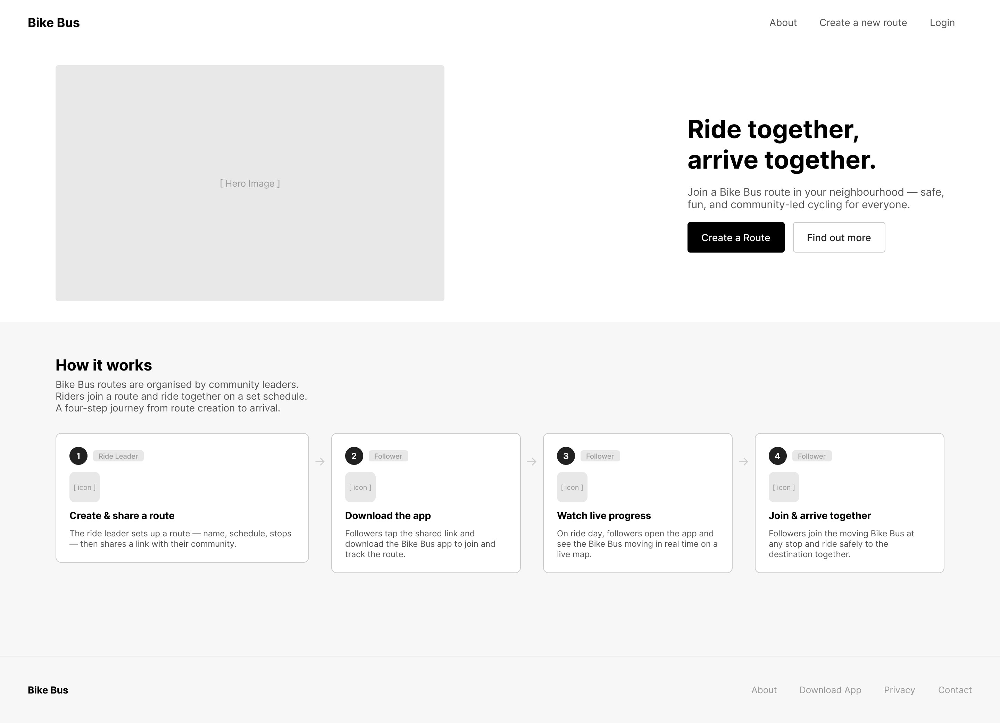
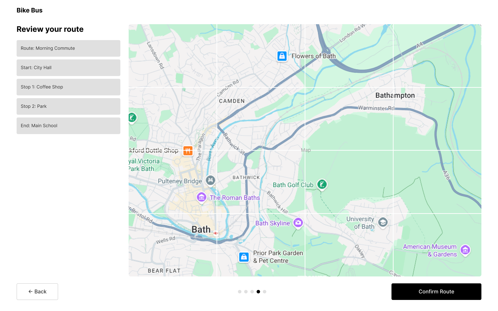
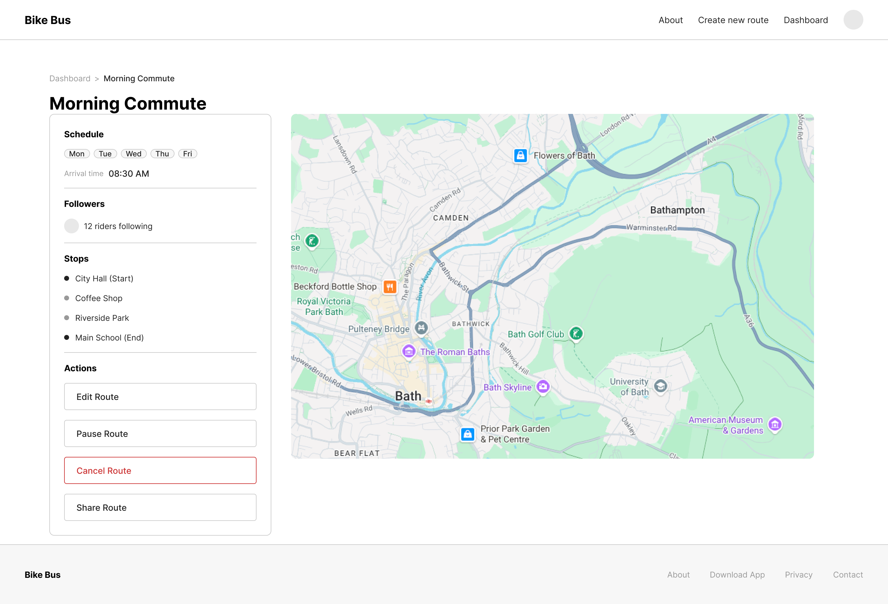
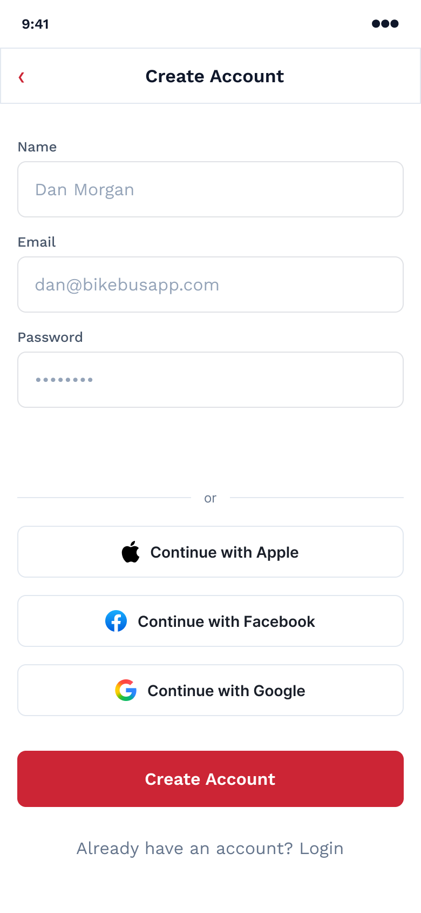
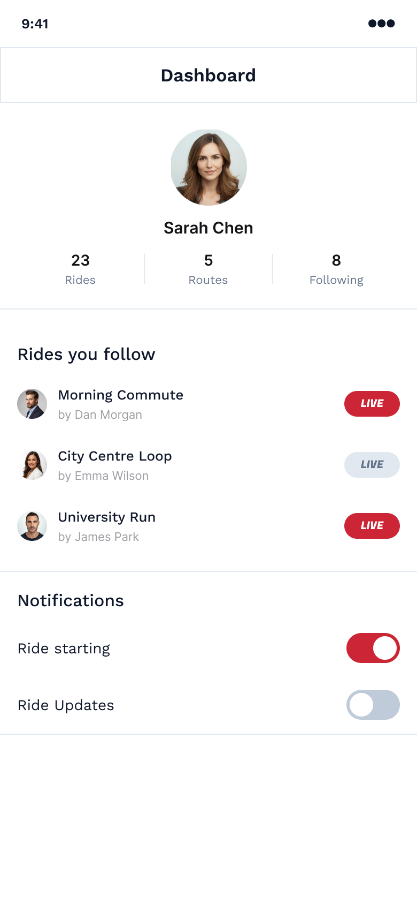
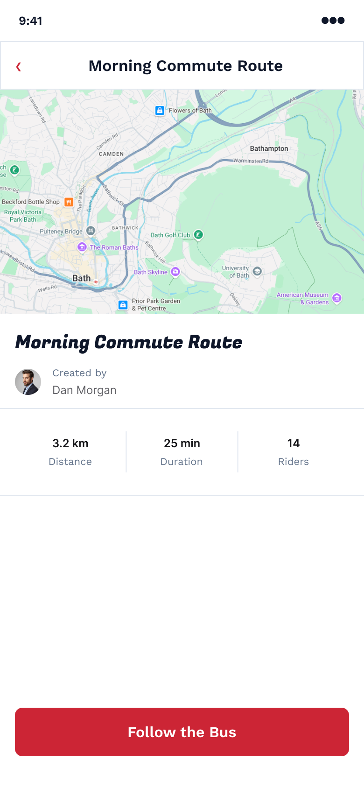
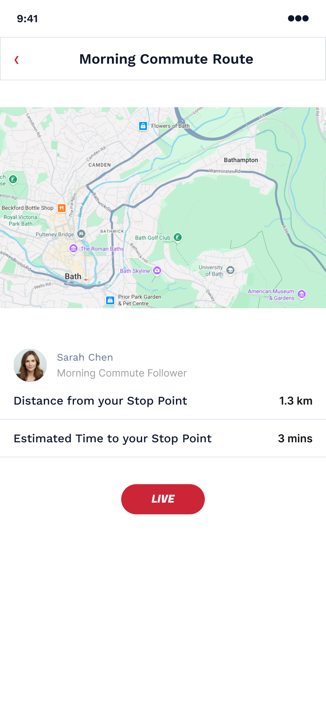

An Award Winning, simplified tool to co-ordinate parents to get the school bike bus running smoothly.
May 2026



01 — The Problem
Whatsapp worked to a point but then it didn't. The messaging thread got busy and within minutes of a departure time there were more questions than answers. Parents that worked and parents that didn't found that an already pressured and stressful time of the day was made worse by uncertainty and unnecessary complexity. The outcome was that the car was easier, but not the solution that was wanted. The solution needed to match the enthusiasm.
02 — The Solution
A ride initiator maps a route and shares it with parents wanting to join the route.
Parents then follow the route and can see when a ride begins.
They then get notifications when the bus is nearing them, enabling them to join in with their children.
Notifications with Purpose




03 — The Journey
The website was trialled alongside 2 parents who were firm advocates of bike buses and were the "pioneers" of one particular school's bike bus. Their initial thoughts were concerned with parents thinking that they were passing responsibility of their child to the ride leader. A user agreement was added when a parent followed a route, confirming that parents were responsible for their child and for maintaining a "community" ethos for the bike bus.
During the route setup phase, initial designs involved just a start and end point, allowing parents to jump onto the bus quite fluidly. However, even when the ride was organised using Whatsapp, it was useful to have interim stopping points when groups of users would congregate before joining the bus.
The app was tested on 5 parents during the low fidelity phase, and a further 5 parents after the high fidelity build.
Common threads during discussions were often centred around safety and availability of information:
A closed circle around the following of a route meant only those with a unique link could follow a certain route. Routes weren't searchable or openly available to the public — parents had to be invited in. This was crucial to user safety and parents being reassured of child safety.
To further ensure user safety, upon the completion of the ride on any given day, user participation was deleted. For the purposes of route data, completely anonymised statistics were saved.
04 — Next Steps